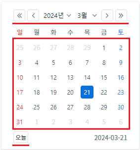
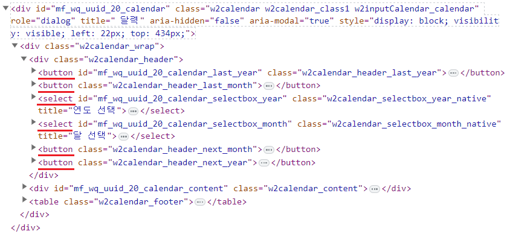
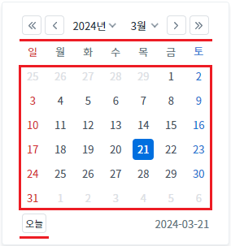
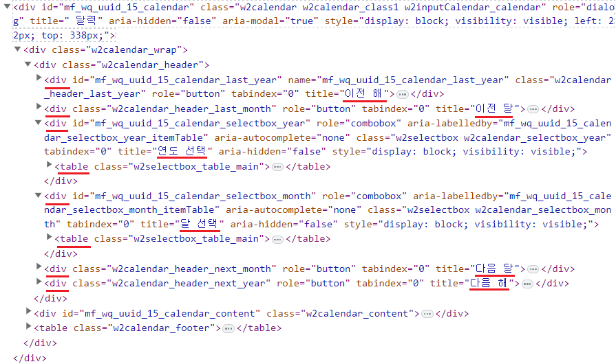
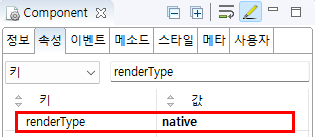

[InputCalendar] 브라우저에 렌더링할 때, 달력의 사용자가 선택할 수 있는 영역을 'button'과 'select' 태그로 구성하기
1개요
InputCalendar의 'renderDiv' 속성을 사용하여 브라우저에 렌더링될 때, 달력에서 사용자가 선택할 수 있는 영역을 'button'과 'select' 태그로 생성하도록 설정한 예제입니다. 이 속성의 기본 동작은 'div'와 'table' 태그로 생성되는 것입니다.
속성의 설정 값에 따른 기능은 다음과 같습니다.
component : [default] 달력 상단의 날짜 선택 영역이 'div'와 'table'로 구성됩니다. 달력의 '일'이 문자열로 구성됩니다. 달력 하단의 아이콘 '오늘 날짜'이 'div'로 구성됩니다.
native : 웹 접근성 설정을 위해 사용합니다. 달력 상단의 날짜 선택 영역이 'button'과 'select'로 구성됩니다. 달력의 '일'이 'button'으로 구성됩니다. 달력 하단의 좌측 아이콘 '현재일'이 'button'으로 구성됩니다.
2구현된 기능
'renderType' 속성을 'component'로 설정하기
'renderType' 속성을 'native'로 설정하기
3예제 테스트 방법
3.1'renderType' 속성을 'native'로 설정하기
예제 영역 "renderType: native"에 구성된 InputCalendar에서 테스트합니다.1
STEP 1: 달력 아이콘을 클릭합니다.
Image 1.브라우저(Chrome) 실행 예시 - 캘린더 아이콘

2
STEP 2: 실행된 결과를 확인합니다.
달력이 표시됩니다. 달력의 상단 영역, '일' 영역, 하단의 좌측 아이콘 'Today' 영역을 브라우저 개발자 도구의 Elements(요소)탭을 통해 확인합니다.
달력 상단의 날짜 선택 영역이 'button'과 'select'로 구성됩니다. 달력의 '일'이 'button'으로 구성됩니다. 달력 하단의 좌측 아이콘 '현재일'이 'button'으로 구성됩니다.
Image 2.브라우저(Chrome) 실행 예시 - 달력의 하단 영역 확인

다음의 HTML 구조 예시는 달력의 상단 영역만 작성되었습니다.
Example 1.브라우저에 렌더링된 HTML 구조
<div class="w2calendar w2calendar_class1 w2inputCalendar_calendar" role="dialog" title="달력" aria-hidden="false" aria-modal="true"> <div class="w2calendar_wrap"> <div class="w2calendar_header"> <button class="w2calendar_header_last_year">이전 해</button> <button class="w2calendar_header_last_month">이전 달</button> <select class="w2calendar_selectbox_year_native" title="연도 선택"> <option value="1978 ">1978년</option> <option value="1979 ">1979년</option> <!-- 중략 --> </select><select class="w2calendar_selectbox_month_native" title="달 선택"> <option value="1 ">1월</option> <option value="2 ">2월</option> <!-- 중략 --> </select> <button class="w2calendar_header_next_month">다음 달</button> <button class="w2calendar_header_next_year">다음 해</button> </div> <!-- 중략 --> </div> </div>
Image 3.브라우저(Chrome) 개발자 도구의 Elements 예시 - 상단 영역

브라우저에 렌더링된 HTML Elements의 'id'는 실행 시점에 동적으로 부여되어 환경에 따라 다릅니다.
3.2'renderType' 속성을 'component'로 설정하기
예제 영역 "(기본 설정) renderType: component"에 구성된 InputCalendar에서 테스트합니다.1
STEP 1: 달력 아이콘을 클릭합니다.
Image 4.브라우저(Chrome) 실행 예시 - 캘린더 아이콘

2
STEP 2: 실행된 결과를 확인합니다.
달력이 표시됩니다. 달력의 상단 영역, '일' 영역, 하단의 좌측 아이콘 'Today' 영역을 브라우저 개발자 도구의 Elements(요소)탭을 통해 확인합니다.
달력 상단의 날짜 선택 영역이 'div'와 'table'로 구성됩니다. 달력 하단의 아이콘 '오늘 날짜'이 'div'로 구성됩니다.
Image 5.브라우저(Chrome) 실행 예시 - 달력의 하단 영역 확인

다음의 HTML 구조 예시는 달력의 상단 영역만 작성되었습니다.
Example 2.브라우저에 렌더링된 HTML 구조
<div class="w2calendar w2calendar_class1 w2inputCalendar_calendar" role="dialog" title=" 달력" aria-hidden="false" aria-modal="true"> <div class="w2calendar_wrap"> <div class="w2calendar_header"> <div name="mf_wq_uuid_15_calendar_last_year" class="w2calendar_header_last_year" role="button" tabindex="0" title="이전 해"></div> <div class="w2calendar_header_last_month" role="button" tabindex="0" title="이전 달"></div> <div role="combobox" aria-labelledby="mf_wq_uuid_15_calendar_selectbox_year_itemTable" aria-autocomplete="none" class="w2selectbox w2calendar_selectbox_year" tabindex="0" title="연도 선택" aria-hidden="false"> <table class="w2selectbox_table_main"> <!-- 중략 --> </table> </div> <div role="combobox" aria-labelledby="mf_wq_uuid_15_calendar_selectbox_month_itemTable" aria-autocomplete="none" class="w2selectbox w2calendar_selectbox_month" tabindex="0" title="달 선택" aria-hidden="false"> <table class="w2selectbox_table_main"> <!-- 중략 --> </table> </div> <div class="w2calendar_header_next_month" role="button" tabindex="0" title="다음 달"></div> <div class="w2calendar_header_next_year" role="button" tabindex="0" title="다음 해"></div> </div> <!-- 중략 --> </div> </div>
Image 6.브라우저(Chrome) 개발자 도구의 Elements 예시 - 상단 영역

브라우저에 렌더링된 HTML Elements의 'id'는 실행 시점에 동적으로 부여되어 환경에 따라 다릅니다.
4구현 예시
4.1달력에서 사용자가 선택할 수 있는 영역을 'button'과 'select' 태그로 구성하기
1
InputCalendar의 속성을 정의합니다.
[필수] renderType="native"
(옵션 설명)
- component : [default] 달력 상단의 날짜 선택 영역이 'div'와 'table'로 구성됩니다. 달력 하단의 아이콘 '오늘 날짜'이 'div'로 구성됩니다.
- native : 웹 접근성 설정을 위해 사용되는 설정 값입니다. 달력 상단의 날짜 선택 영역이 'button'과 'select'로 구성됩니다. 달력의 '일'이 'button'으로 구성됩니다. 달력 하단의 좌측 아이콘 '현재일'이 'button'으로 구성됩니다.
Image 7.웹스퀘어 스튜디오의 Component View - 속성 설정 예시

Example 3.Source
<!-- inputCalendar 의 소스 본문 예시 --> <w2:inputCalendar renderType="native"> </w2:inputCalendar>
5주요 API
renderType